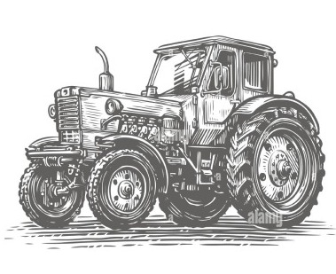
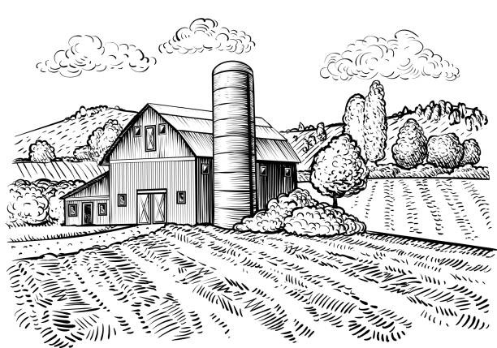
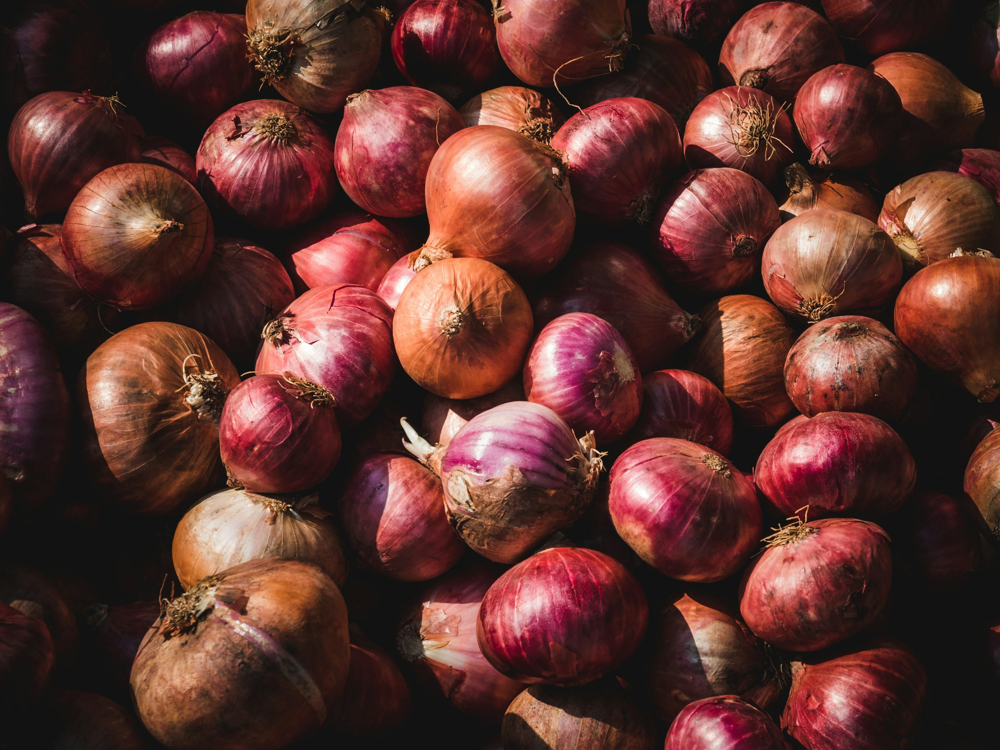
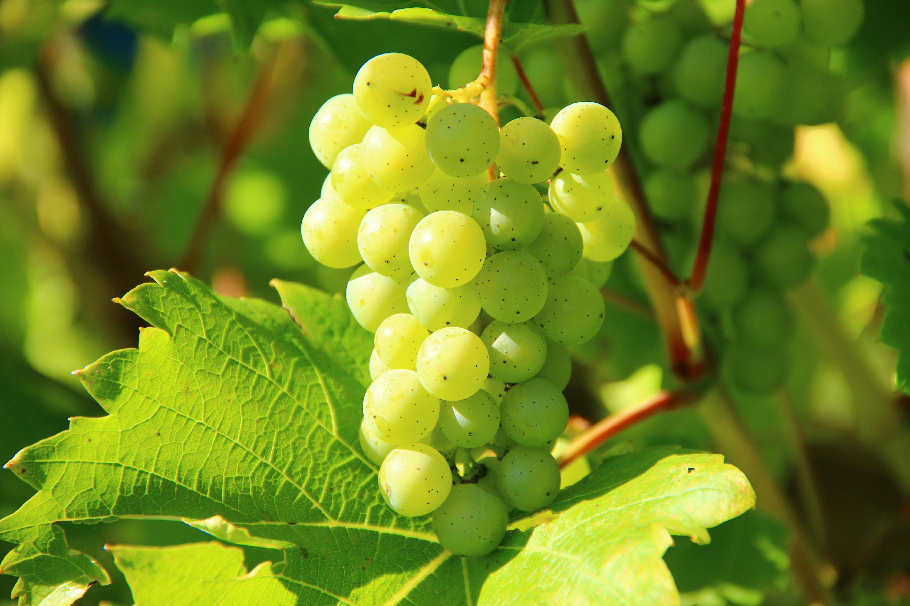
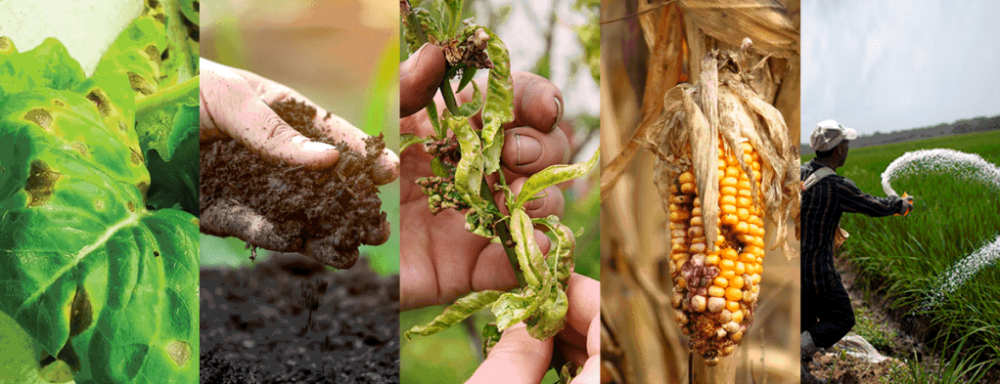

We provide a platform which connect farmers with affordable agricultural equipment rentals making it easier to access the machinery you need without the high costs of ownership. This website will help farmers to rent their shiftless equipment for less price to other farmers who require them. When user enters all the information about required machinery and if it is not available, he will be on waiting period for sometime till the equipment is available.

This website will provide a wide range of equipment that are used during farming.
User can choose from a wide range of equipment, including:
Tractors
Harvesters
Plows and Cultivators
Sprayers
Balers
Find the right tools for every farming task!

Enjoy competitive and transparent rental rates,
with flexible options for daily, weekly, or monthly rentals to suit your budget and needs.
This rates will help you manage your budget by keeping the rates low.

Join our community by being an active farmer or agricultural professional with proof of land ownership or a lease agreement. Members gain access to exclusive discounts and priority bookings. Start Your Rental Journey Today! Sign up now and streamline your farming operations with our easy rental solutions!
About KrishiSevaRentals, Inc.

At KrishiSevaRentals, We are proud to offer our clients expert advice paired with a wide selection of specialist agricultural products tailored to meet your needs. Our extensive range includes the latest in farming machinery, designed to enhance productivity, efficiency, and sustainability. What sets us apart is our unique opportunity for clients to experience our machinery firsthand before making a decision. At our demonstration farm, you can test drive the equipment, allowing you to evaluate its performance and suitability, ensuring you make a fully informed choice. Our dedicated team consists of highly skilled professionals located across the country, committed to delivering the highest quality products and services to farmers. From innovative machinery to advanced farming solutions, we continuously strive to set the benchmark in agricultural excellence. Moreover, we are always eager to welcome passionate and talented individuals who wish to contribute to our mission of producing the world’s finest agricultural products. Join us, and be part of a team that is revolutionizing modern farming, one innovation at a time.

Modern farming methods have often proven effective and have delivered outstanding results. A farmer from Nashik, stands testimony to the wonders modern farming techniques can do. Here’s how Mr. Balu Darade grew a whopping 195 quintal onion – NABARD’s golden initiative The National Bank for Agriculture and Rural Development (NABARD) initiated a noble program where it trained the farmers for modern farming techniques. Mr. Balu Darade participated in this program as he wished to yield more than 100 quintal, his average produce..
Read More
India is among the leading 10 countries in the world in the production of grapes. Mostly used in India as a table fresh fruit, grapes are also used for making wines and raisins. Did you know? There are more than 25 varieties of grapes! Table purpose varieties Seeded – Cardinal, concord Emperor, Italia, Anab-e-Shahi, Cheema Sahebi, Kali sahebi, Rao Sahebi. Seedless – Thompson seedless, flame seedless, Kishmish Chorni, Perlette, Arkavati. Raisin purpose varieties Thompson seedless, Manik Chaman, Sonaka, Black Corinth, Black Monukka, Arkavati, Dattier. Wine varieties Chardonnay, Cabernet Sauvignon, Bangalore Blue, Muscat, Blanc, Pinot Noir, Pinot Blanc, White Riesling, and Merlot.
Read More
Imbalanced Nutrition: Plants require balanced nutrition to grow to their full potential.This consists of at least 13 essential nutrients in different quantities. Farmers normally consider only NPK fertiliser application, ignoring the importance of other essential nutrients and micronutrients. This often results in reduced yield and an average-quality crop. Fertiliser application without soil testing: Soil testing is crucial before you choose/apply fertilisers. You can then choose the right fertilisers based on the soil test report. It is essential to provide deficient nutrients through fertilisers if you want a high yield.
Read More